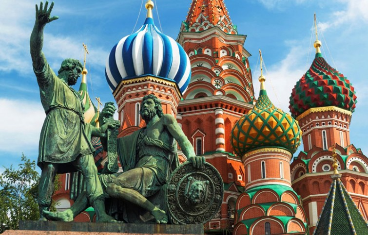
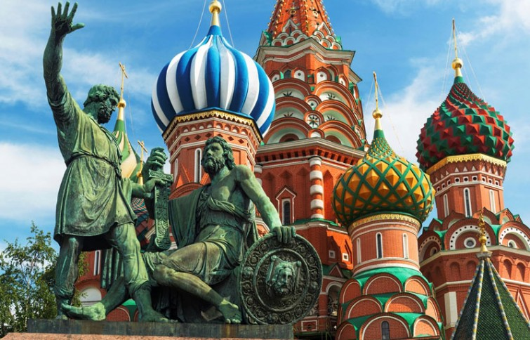
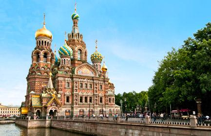
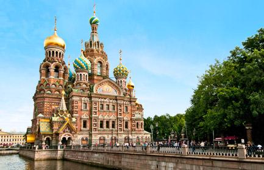

St. Petersburg
Willkommen in St. Petersburg
An der weiten Mündung der Newa in die Ostsee trifft die sprichwörtliche russische Weite auf Europas Städtekultur: Das Ergebnis ist einmalig und heißt St. Petersburg, eine Metropole, die in ihrer nur 310 Jahre kurzen Geschichte enorme Höhenflüge und katastrophale Krisen durchmachte. Und doch kam sie immer wieder fest auf dem sumpfigen Boden zu stehen, auf dem sie nach dem Willen Peters des Großen errichtet worden war. Vor allem das 20. Jh. war für die letzte Hauptstadt des Zarenreichs eine harte Prüfung – zweimal stand sie am Rande des Untergangs. Jetzt, im 21. Jh., startet das einstige Leningrad wieder durch: Mit einem reichen Erbe an Kultur, Kunst und Architektur gesegnet, boomt und blüht St. Petersburg wieder.
Die Metropole an der Newa hat etwas von einer Fata Morgana, nicht nur im unwirklichen Pastelllicht der berühmten Weißen Nächte. Steht man auf der Troizki-Brücke, hoch über der weiten Wasserfläche des Flusses, so scheint die Stadt zu schwimmen. Horizontale Linien prägen das Bild – der Wasserspiegel, die Ufermauern, die einheitlich hohen Prachtbauten entlang der Kais. Und Brücken, die so flach sind, dass man sie nächtens aufklappen muss, um Schiffe passieren zu lassen. Vertikal stehen nur zwei goldene Nadeln: Wie Blitze zucken die spitzen Türme von Peter-Paul-Kathedrale und Admiralität in den Himmel.
Wasser, viel Wasser – und Eis im Winter – bilden das Zentrum der fünftgrößten Stadt Europas. Und dies in jenem Staat, der die größte Landmasse der Erde besitzt. Doch von diesen Ufern aus wurde Russland zwei Jahrhunderte lang beherrscht. Hier floss sein Reichtum zusammen und schlug sich in Form atemberaubender Kunstschätze und Baudenkmäler nieder. Deshalb ist St. Petersburg mit seiner Vielzahl an Museen und Palästen heute „Russlands Kulturhauptstadt“, jünger zwar als New York, aber dennoch in erster Linie eine historische Metropole. Nach allen Gesetzen der Wahrscheinlichkeit dürfte es diese Stadt allerdings gar nicht geben: Nirgendwo auf der Welt findet sich eine so weit nördlich gelegene Millionenstadt – und hier erdulden gleich 5 Mio. Menschen die langen, dunklen Winter. Auch der Boden, auf dem exakt am 16. Mai 1703 zunächst die Festung „Sankt Piter-Burch“ gegründet wurde, war dafür denkbar ungeeignet: ein sumpfiges Eiland in einem Flussdelta ohne Weg und Steg. Bei steifem Westwind herrschte gleich Land unter.
Sehenswertes vor Ort
-
Gosudarstvenny Ermitash
Für Kunstfreunde ist allein die Eremitage schon Grund genug, nach Sankt Petersburg zu kommen, denn dieses überwältigende Museum steht zu Recht auf einer Stufe mit Louvre, Prado oder dem "Met" in New York. Vor allem westeuropäische Gemälde von Weltrang, von Da Vinci bis Picasso, hängen hier dicht an dicht. Doch ist die Eremitage weit mehr als nur ein mit Kulturschätzen üppig bestücktes Museum: Der Winterpalast und seine Anbauten, die einstige Hauptresidenz der Zarendynastie, stellen selbst das prächtigste unter den gezeigten 60.000 Exponaten dar. Den Grundstock für diese gewaltige Sammlung legte Katharina II., die 1764 beim Berliner Kaufmann Johann Gotzkowski 225 Gemälde erwerben ließ. Im gleichen Jahr begann neben dem Winterpalast der Bau der Kleinen Eremitage. Hier genoss die Zarin ihre Kunstschätze allein oder im intimen Kreis - daher der Name Eremitage. Die Kunstsammlung des Zarenhofes wuchs und damit auch ihr Platzbedarf: Zunächst entstand ab 1770 die Alte Eremitage entlang des Newa-Ufers, dann im rechten Winkel dazu die Raffael-Loggien - und schließlich die Neue Eremitage des Münchner Architekten Leo von Klenze. Deren von zehn Atlanten getragener Paradeeingang hatte seinen Sinn:
1852 machte der Hof seine Sammlungen teilweise der Öffentlichkeit zugänglich. Der während der Oktoberrevolution 1917 erstürmte Winterpalast wurde danach in das verstaatlichte Museum integriert. Nun gelangten viele beschlagnahmte Kunstschätze von Adel und Kirche in die Eremitage. Den Zweiten Weltkrieg überstand die teils in den Ural ausgelagerte Kollektion - anders als die Gebäude - relativ unbeschadet. Besucher betreten vom Schlossplatz durch ein prächtiges Tor zunächst den weiten Innenhof des Winterpalastes. Dieses barocke Schloss mit über 1000 Räumen wurde 1754-1762 von Francesco Rastrelli "zum Ruhme Russlands" errichtet. Ein Großbrand 1837 zerstörte allerdings das gesamte Innenleben des Palastes, das später von Baumeistern wiederhergestellt wurde. Nach der Kassenhalle schreiten Sie über die pompöse Jordan-Treppe ins erste Obergeschoss hinauf, wo sich die Wege verzweigen: Geradeaus geht es in die großen Säle auf der Newa-Seite, wo Sonderausstellungen stattfinden. Nach links gelangt man in einige der reichsten Räume des Palastes: in den Peter-Saal, den von vergoldeten Säulen flankierten, festlichen Wappensaal, dann in die imposante Militärgalerie von 1812, schließlich in den Georgssaal mit dem Zarenthron. Wer sich nach der Jordan-Treppe zweimal nach links wendet, findet die spektakuläre Kollektion französischer Impressionisten aus Beutekunst-Beständen, die die Eremitage erstmals 1995 zeigte. Unvergessen bleibt auch der dann folgende, im maurischen Stil errichtete Pavillonsaal in der Kleinen Eremitage. An einer großen grünen Malachitvase angekommen, sollten Sie sich entscheiden, was Sie weiter ansehen möchten: Geradeaus weiter folgt in der Alten Eremitage die italienische Abteilung mit zwei Da-Vinci-Madonnen und den Raffael-Loggien. Nach rechts führt der Weg zur holländischen und flämischen Malerei. Wer an der Vase jedoch treppab geht, gelangt in die weitläufige Antikenabteilung in der Neuen Eremitage. Oder Sie gehen zurück in den Winterpalast: Auf dem gleichen Stockwerk befinden sich prachtvoll ausgestattete Gemächer der Zaren. Das Erdgeschoss birgt die prähistorischen Schätze sowie die Schatzkammer. Besonders beeindruckt hier das 2500 Jahre alte "Gold der Skythen": Das Reitervolk aus dem Süden Russlands hinterließ fantastische Goldarbeiten, v.a. mit kunstvollen Tiermotiven. In den eher schmucklosen Räumen des zweiten Obergeschosses stößt man auf die weitläufige orientalische Sammlung sowie die hauseigenen "Franzosen" des 19. und 20. Jhs.
-
Issakijewski Sobor
Diese Kathedrale bei einem Sankt Petersburg-Besuch zu übersehen, ist unmöglich. Mit 101 m Höhe überragt sie das Stadtzentrum – die goldene Kirchenkuppel ist die viertgrößte der Welt. Die Sankt Petersburger nennen gerne weitere Superlative des Sakralbaus: 12.000 Menschen haben darin Platz, sein Gewicht von 300.000 t ruht auf 24.000 in den Boden gerammten Pfählen. Die Wände sind bis zu 5 m dick. Zur Vergoldung wurden 400 kg Gold verbraucht. Zur überaus üppigen Ausgestaltung des Innenraums dienten 43 verschiedene Mineralien. Sie wurden alle auch in einer ausgestellten Büste des Architekten Auguste de Montferrand verwendet, der einen Monat nach der Fertigstellung 1858 gestorben war. Die außen mit ihren 112 Monolithsäulen aus karelischem Granit streng und massiv wirkende Kirche ist im Innern hell und feierlich. Zentrales Element ist der Ikonostas aus weißem Marmor, der von Säulen aus Malachit und Lazurit flankiert wird. 300 Skulpturen und 150 Gemälde machen die Kathedrale in der Tat zu dem, was sie heute auch offiziell ist: ein Museum, in dem nur an hohen Feiertagen Gottesdienste abgehalten werden. Selbst wer Zeit und Kosten für die Innenbesichtigung sparen möchte, sollte den Aufstieg auf die Kolonnade nicht versäumen: Aus 43 m Höhe bietet sich ein wunderbarer Rundumblick.
-
Birschevaya Ploschtschad
Der Name Strelka (russ.: Pfeil) steht nicht unbedingt im Stadtplan. Offiziell heißt das Areal an der Inselspitze der Wassili-Insel Börsenplatz. An dieser Newa-Gabelung befand sich von etwa 1730 bis 1880 der Petersburger Hafen mit Kais, Zoll und Packhäusern.
-
Petropawlowskaja Krepost
Die Festung auf der Haseninsel ist die Keimzelle St. Petersburgs. Zunächst wurden auf dem nur 750 m langen Eiland Erdwälle und Holzpalisaden errichtet. Es entstanden sechs Bastionen, die nach ihren "Bauleitern" benannt wurden - einer davon war der Zar selbst.
-
Spas na Krowi
Diese bunte Zwiebelturmkirche fällt im Petersburger Stadtbild aus dem Rahmen: Sie wurde erst 1887-1907 im neo-altrussischen Stil errichtet. Anlass für den Bau war das Anarchistenattentat auf Zar Alexander II., der hier 1881 durch eine Bombe getötet wurde.
-
Newski Prospekt
Der 4,5 km lange Newski Prospekt bildet auf seiner ganzen Länge das pulsierende Zentrum Petersburgs - wobei der breitere Mittelabschnitt zwischen Moika und Fontanka der prächtigste und lebhafteste ist. Hier stehen Kaufhäuser und Ladenpassagen.
-
Zheleznyi vsadnik
Das bekannteste Wahrzeichen Sankt Petersburgs bildet den Mittelpunkt des grünen Dekabristenplatzes: der Eherne Reiter. Das Denkmal für Peter den Großen zeigt den Stadtgründer als dynamischen Visionär, der auf seinem sich aufbäumenden Pferd zum großen Sprung nach vorn ansetzt. Das Werk des Franzosen Etienne Falconet wäre nur halb so attraktiv, stünde es nicht auf dem wie eine mächtige Woge geformten Sockel. Ursprünglich war dies ein 1600 t schwerer Felsblock, der 12 km entfernt lag. Zu seinem Transport baute man eigens einen Katamaran aus zwei Segelschiffen. Den Namen "Eherner Reiter" erhielt das Denkmal 1833 durch ein Gedicht Puschkins, in dem Ross und Reiter lebendig werden. Auf Russisch heißt er übrigens "Kupferner Reiter" - dabei ist die Statue in Wirklichkeit aus Bronze.
-
Medny wsadnik
Dieses imposante Denkmal für Peter den Großen ist das bekannteste Wahrzeichen der Stadt. Es zeigt den Stadtgründer als dynamischen Visionär, der auf seinem sich aufbäumenden Pferd zum großen Sprung nach vorn ansetzt. Das Werk des Franzosen Etienne Falconet wäre allerdings nur halb so attraktiv, stünde es nicht auf dem wie eine mächtige Woge geformten Sockel: Entstanden ist er aus einem 1600 t schweren Felsblock, der in 12 km Entfernung gelegen hatte. Damit er transportiert werden konnte, baute man eigens einen Katamaran aus zwei Segelschiffen. Den Namen "Eherner Reiter" erhielt das Denkmal 1833 durch ein Gedicht Puschkins, in dem Ross und Reiter lebendig werden. Auf Russisch heißt das Denkmal übrigens "Kupferner Reiter"- dabei ist die Statue in Wirklichkeit aus Bronze.
Entdecken Sie die Schönheits St. Peterburgs


 

 
